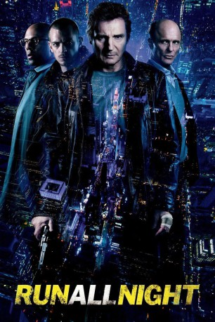

#1054 Run All Night
 gesehen am 02.07.2015
gesehen am 02.07.2015
 
 IMDB-Wertung: 6.6 / 10
IMDB-Wertung: 6.6 / 10  Metascore: 59
Metascore: 59 
Der Brooklyn-Gangster und erfahrene Profi-Killer Jimmy Conlon war einst unter dem Namen Totengräber bekannt – aber das ist lange her. Inzwischen nützt ihm seine enge Freundschaft mit dem Paten Shawn Maguire nicht mehr viel. Jimmy ist 55, die Sünden seiner Vergangenheit holen ihn ein – und zwar in Gestalt jenes verbissenen Detective, der Jimmy seit 30 Jahren dicht auf den Fersen bleibt. Von seinem Sohn Mike hat Jimmy schon lange nichts mehr gehört. Doch als Mike auf die Abschussliste gerät, muss sich Jimmy für eine Seite entscheiden: Entweder er bleibt der Gangsterfamilie treu, der er sich angeschlossen hat, oder er steht zu seiner eigentlichen Familie, die er vor Jahren im Stich gelassen hat. Ab sofort kann Jimmy sich auf niemanden mehr verlassen – nur eine Nacht bleibt ihm, um sich darüber klar zu werden, wo seine Verantwortung liegt und wie er das Versäumte nachholen kann.
Jahr: 2015
Dauer: 114 Minuten
FSK: 16
Land: USA Studio: Warner Bros.Tonspuren: DTS - ,
Untertitel: Deutsch, Englisch,
Auflösung: 1080p (1920x800) Größe: 9963 MB
Genre: Action, Krimi, Drama, Thriller
Regisseur: Jaume Collet-Serra
Drehbuch: Brad Ingelsby
Soundtrack: Junkie XL
Darsteller:
 Liam Neeson als Jimmy Conlon
Liam Neeson als Jimmy Conlon Ed Harris als Shawn Maguire
Ed Harris als Shawn Maguire Joel Kinnaman als Mike Conlon
Joel Kinnaman als Mike Conlon Boyd Holbrook als Danny Maguire
Boyd Holbrook als Danny Maguire Bruce McGill als Pat Mullen
Bruce McGill als Pat Mullen Genesis Rodriguez als Gabriela Conlon
Genesis Rodriguez als Gabriela Conlon Vincent D'Onofrio als Detective John Harding
Vincent D'Onofrio als Detective John Harding Lois Smith als Margaret Conlon
Lois Smith als Margaret Conlon Common als Andrew Price
Common als Andrew Price Beau Knapp als Kenan Boyle
Beau Knapp als Kenan Boyle Patricia Kalember als Rose Maguire
Patricia Kalember als Rose Maguire Daniel Stewart Sherman als Brendan
Daniel Stewart Sherman als Brendan James Martinez als Detective Oscar Torres
James Martinez als Detective Oscar Torres Radivoje Bukvic als Victor Grezda
Radivoje Bukvic als Victor Grezda- Tony Naumovski als Samir
 Holt McCallany als Frank
Holt McCallany als Frank- Aubrey Joseph als Curtis 'Legs' Banks
- Giulia Cicciari als Catelyn Conlon
- Gavin-Keith Umeh als Officer Randle
- Malcolm Goodwin als Officer Colston
- Ella June Conroy als Kristen
- Allison Byron als Little Girl
 John Cenatiempo als Tommy
John Cenatiempo als Tommy- Jessica Ecklund als Frank's Wife
- Dan Domingues als Uncle Ricky
- Devon O'Brien als Eric
- Barrington Walters Jr. als Terrell
- Jacqueline Murphy als Party Guest #1
- George Schroeder als NYC Detective / Driver , uncredited
 James P. Anderson als Old Ranger Fan , uncredited
James P. Anderson als Old Ranger Fan , uncredited- Giuseppe Ardizzone als Shawn's Crew , uncredited
 José Báez als Apartment Building Resident , uncredited
José Báez als Apartment Building Resident , uncredited Candice T. Cain als Neighbor , uncredited
Candice T. Cain als Neighbor , uncredited Marko Caka als Police Officer , uncredited
Marko Caka als Police Officer , uncredited Chris J. Cullen als Young Pat Mullen , uncredited
Chris J. Cullen als Young Pat Mullen , uncredited Tony Devon als Detective Angie , uncredited
Tony Devon als Detective Angie , uncredited- Vince Edgehill als Commuter , uncredited
- Marcia M Francis als Bondage Dancer , uncredited
- Annie Hall als Ranger Fan , uncredited
- Shirville Jarvis als Apartment Resident , uncredited
- Kyle Knauf als Shawn's Crew , uncredited
 Ilan Krigsfeld als Shawn's Crew , uncredited
Ilan Krigsfeld als Shawn's Crew , uncredited- Adam Leong als MSG Security Guard , uncredited
- Lynn Marocola als Rangers Fan , uncredited
 Scott Martin als Subway Commuter , uncredited
Scott Martin als Subway Commuter , uncredited Faye Yvette McQueen als Bondage Dancer , uncredited
Faye Yvette McQueen als Bondage Dancer , uncredited- Matt Meinsen als Shawn's Crew , uncredited
 Gregg Micheals als Businessman , uncredited
Gregg Micheals als Businessman , uncredited- Olan Montgomery als Shawn's Crew , uncredited
 Julian Murdoch als Young Mike , uncredited
Julian Murdoch als Young Mike , uncredited
Datei: X:\2015(N-Z)\Run All Night (2015, FSK16, 1920x800).mkv seit 15.05.2015
Festplatte: HD 2015(A-Z)
 Es gibt insgesamt 161 Filme in der Gruppe '2015(N-Z)'
Es gibt insgesamt 161 Filme in der Gruppe '2015(N-Z)'